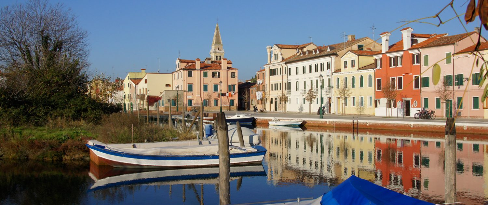
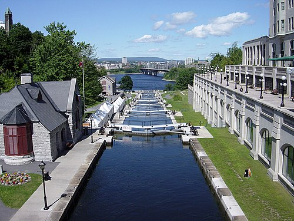
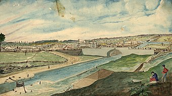
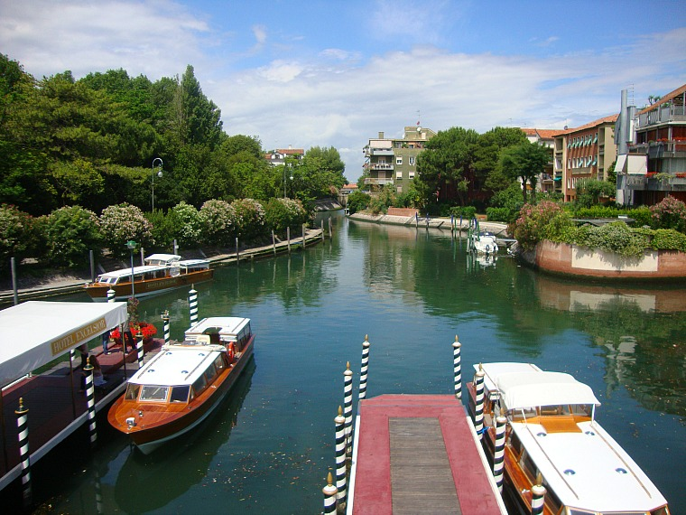
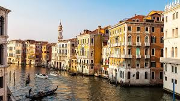

Rideau Canal
Introduction
The Rideau Canal is a 202 kilometre long canal that links the Ottawa River, at Ottawa, with the Saint Lawrence River at Kingston, Ontario, Canada. Its 46 locks raise boats from the Ottawa River 83 metres upstream along the Rideau River to the Rideau Lakes, and from there drop 50 metres downstream along the Cataraqui River to Kingston.

Geography
The construction of the canal was supervised by Lieutenant-Colonel John By of the Royal Engineers. Private contractors such as future sugar refining entrepreneur John Redpath, Thomas McKay, Robert Drummond, Thomas Phillips, Andrew White and others were responsible for much of the construction, and the majority of the actual work was done by thousands of Irish, Scottish, and French-Canadian labourers. Colonel John By decided to create a slackwater canal system instead of constructing new channels. This was a better approach as it required fewer workers, was more cost effective, and would have been easier to build.
The lock at Lower Brewers nearing completion in 1831, by Thomas Burrowes

History
Opened in 1832 for commercial shipping, freight was eventually moved to railways and the St. Lawrence Seaway, and it remains in use today for pleasure boating, operated by Parks Canada May to October. It is the oldest continuously operated canal system in North America, and is a UNESCO World Heritage Site.The canal work started in the fall of 1826, and it was completed by the spring of 1832. The first full steamboat transit of the canal was made by Robert Drummond's steamboat, Rideau (aka "Pumper"), leaving Kingston on May 22, 1832 with Colonel By and family on board, and arriving in Bytown on May 29, 1832.

After the arrival of railway routes into Ottawa, most use of the canal was for pleasure craft. The introduction of the outboard motor led to an increase in small pleasure craft and increasing use of inland waterways like the Rideau and Trent-Severn. Today the Rideau forms part of the Great Loop, a major waterway route connecting a large area of the eastern United States and Canada.Brewer's Lower Mill – view down the Cataraqui Creek and clearing made for the Rideau Canal, 1829 by Thomas Burrowes
